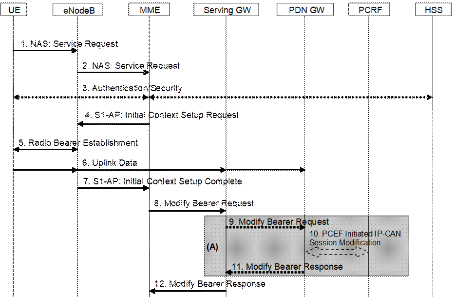
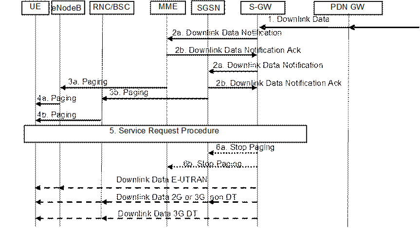

Figure 5.3.4.1-1: UE triggered Service Request procedure
The Service Request procedure in this clause is triggered by the UE in ECM-IDLE status to establish user plane radio bearers for the UE.
The UE in ECM-IDLE state can also use this procedure to establish user plane radio bearers even if the UE applies Control Plane CIoT EPS Optimisation, when the UE and MME supports S1-U data transfer or User Plane EPS Optimisation in addition to Control Plane CIoT EPS Optimisation.
NOTE 1: For a PMIP-based S5/S8, procedure steps (A) are defined in TS 23.402 [2]. Steps 9 and 11 concern GTP-based S5/S8.
1. The UE sends NAS message Service Request towards the MME encapsulated in an RRC message to the eNodeB. The RRC message(s) that can be used to carry the S-TMSI and this NAS message are described in TS 36.300 [5].
2. The eNodeB forwards NAS message to MME. NAS message is encapsulated in an S1-AP: Initial UE Message (NAS message, TAI+ECGI of the serving cell, S-TMSI, CSG ID, CSG access Mode, RRC establishment cause). Details of this step are described in TS 36.300 [5]. If the MME can't handle the Service Request it will reject it. CSG ID is provided if the UE sends the Service Request message via a CSG cell or a hybrid cell. CSG access mode is provided if the UE sends the Service Request message via a hybrid cell. If the CSG access mode is not provided but the CSG ID is provided, the MME shall consider the cell as a CSG cell.
If a CSG ID is indicated and CSG access mode is not provided, and there is no subscription data for this CSG ID and associated PLMN or the CSG subscription is expired, the MME rejects the Service Request with an appropriate cause. The UE shall remove the CSG ID and associated PLMN of the cell where the UE has initiated the service request procedure from the Allowed CSG list, if present.
For UEs with emergency EPS bearers, i.e. at least one EPS bearer has an ARP value reserved for emergency services, if CSG access restrictions do not allow the UE to get normal services the MME shall deactivate all non-emergency bearers and accept the Service Request.
If LIPA is active for a PDN connection and if the cell accessed by the UE does not link to the L-GW where the UE inititiated the LIPA PDN Connection, the MME shall not request the establishment of the bearers of the LIPA PDN connection from the eNodeB in step 4 and shall request disconnection of the LIPA PDN connection according to clause 5.10.3. If the UE has no other PDN connection then the MME shall reject the Service Request with an appropriate cause value resulting in the UE detaching, skip the following steps of the procedure and initiate the release of the core network resources with the implicit MME-initiated Detach procedure according to clause 5.3.8.3.
If there is a "Availability after DDN Failure" monitoring event or a "UE Reachability" monitoring event configured for the UE in the MME, the MME sends an event notification (see TS 23.682 [74] for further information).
To assist Location Services, the eNB indicates the UE's Coverage Level to the MME.
3. NAS authentication/security procedures as defined in clause 5.3.10 on "Security function" may be performed.
If the MME is configured to support RLOS and the UE indicated Attach Type "RLOS", based on local regulation and operator policy, the MME may skip the authentication and security setup, or the MME may perform authentication if security information is available or obtainable from a HSS, and continue the Service Request procedure regardless of the authentication result.
4. If there is a Service Gap timer running in the MME MM Context for the UE and the MME is not waiting for a MT paging response from the UE, the MME rejects the Service Request with an appropriate cause. In addition, MME may also provide a UE with a Mobility Management Back-off timer set to the remaining value of the Service Gap timer.
The MME deletes S11-U related information in UE context if there is any, including TEID(DL) for the S11-U for Control Plane CIoT EPS Optimisation if data buffering is in the MME, ROHC context for Control Plane CIoT EPS Optimisation, etc, but not the Header Compression Configuration. The MME sends S1-AP Initial Context Setup Request (Serving GW address, S1-TEID(s) (UL), EPS Bearer QoS(s), Security Context, MME Signalling Connection Id, Handover Restriction List, CSG Membership Indication) message to the eNodeB. If there is a PDN connection established for Local IP Access, this message includes a Correlation ID for enabling the direct user plane path between the HeNB and the L-GW. If there is a PDN connection established for SIPTO at the Local Network with L-GW function collocated with the (H)eNB, this message includes a SIPTO Correlation ID for enabling the direct user plane path between the (H)eNB and the L‑GW. This step activates the radio and S1 bearers for all the active EPS Bearers. The eNodeB stores the Security Context, MME Signalling Connection Id, EPS Bearer QoS(s) and S1-TEID(s) in the UE RAN context. The step is described in detail in TS 36.300 [5]. Handover Restriction List is described in clause 4.3.5.7 "Mobility Restrictions".
NOTE 2: In this release of the 3GPP specification the Correlation ID and SIPTO Correlation ID is set equal to the user plane PDN GW TEID (GTP-based S5) or GRE key (PMIP-based S5) which is specified in clause 5.3.2.1 and clause 5.10.2.
If the UE included support for restriction of use of Enhanced Coverage, the MME sends Enhanced Coverage Restricted parameter to the eNB in the S1-AP message.
The MME shall only request to establish Emergency EPS Bearer if the UE is not allowed to access the cell where the UE initiated the service request procedure due to CSG access restriction.
If the Service Request is performed via a hybrid cell, CSG Membership Indication indicating whether the UE is a CSG member shall be included in the S1-AP message from the MME to the RAN. Based on this information the RAN can perform differentiated treatment for CSG and non-CSG members.
If RACS is supported and MME has UE Radio Capability ID in UE context, it signals the UE Radio Capability ID to the eNB as defined in clause 5.11.3a. If the eNB does not have mapping between the specific UE Radio Capability ID and the UE radio capabilities, it shall use the procedure described in TS 36.413 [36] to retrieve the mapping from the Core Network.
5. The eNodeB performs the radio bearer establishment procedure. The user plane security is established at this step, which is described in detail in TS 36.300 [5]. When the user plane radio bearers are setup. EPS bearer state synchronization is performed between the UE and the network, i.e. the UE shall locally remove any EPS bearer for which no radio bearers are setup and, if the radio bearer for a default EPS bearer is not established, the UE shall locally deactivate all EPS bearers associated to that default EPS bearer.
6. The uplink data from the UE can now be forwarded by eNodeB to the Serving GW. The eNodeB sends the uplink data to the Serving GW address and TEID provided in the step 4. The Serving GW forwards the uplink data to the PDN GW.
7. The eNodeB sends an S1-AP message Initial Context Setup Complete (eNodeB address, List of accepted EPS bearers, List of rejected EPS bearers, S1 TEID(s) (DL)) to the MME. This step is described in detail in TS 36.300 [5]. If the Correlation ID or SIPTO Correlation ID is included in step 4, the eNodeB shall use the included information to establish a direct user plane path to the L-GW and forward uplink data for Local IP Access or SIPTO at the Local Network with L-GW function collocated with the (H)eNB accordingly.
8. The MME sends a Modify Bearer Request message (eNodeB address, S1 TEID(s) (DL) for the accepted EPS bearers, Delay Downlink Packet Notification Request, RAT Type, MO Exception data counter) per PDN connection to the Serving GW. If the Serving GW supports Modify Access Bearers Request procedure and if there is no need for the Serving GW to send the signalling to the PDN GW, the MME may send Modify Access Bearers Request (eNodeB address(es) and TEIDs for downlink user plane for the accepted EPS bearers, Delay Downlink Packet Notification Request) per UE to the Serving GW to optimise the signalling. The Serving GW is now able to transmit downlink data towards the UE. The usage of the Delay Downlink Packet Notification Request Information Element is specified in clause 5.3.4.2 below. If the PDN GW requested UE's location and/or User CSG information and the UE's location and/or User CSG information has changed, the MME also includes the User Location Information IE and/or User CSG Information IE in this message. If ISR is activated or if the Serving Network IE has changed compared to the last reported Serving Network IE then the MME also includes the Serving Network IE in this message. If the UE Time Zone has changed compared to the last reported UE Time Zone then the MME shall include the UE Time Zone IE in this message. If the internal flag Pending Network Initiated PDN Connection Signalling is set, the MME indicates UE available for end to end signalling in the Modify Bearer Request message and reset the flag.
The MME only includes the MO Exception data counter if the RRC establishment cause is set to "MO exception data" and the UE is accessing via the NB-IoT RAT. The MME maintains the MO Exception Data Counter for Serving PLMN Rate Control purposes (see clause 4.7.7.2). The MME may immediately send the MO Exception Data Counter to the Serving GW. Alternatively, in order to reduce signalling, the MME may send the MO Exception Data Counter to the Serving GW as described in TS 29.274 [43].
The MME and the Serving GW clears the DL Data Buffer Expiration Time in their UE contexts if it was set, to remember that any DL data buffered for a UE using power saving functions has been delivered and to avoid any unnecessary user plane setup in conjunction with a later TAU.
If a default EPS bearer is not accepted by the eNodeB, all the EPS bearers associated to that default bearer shall be treated as non-accepted bearers. The MME releases the non-accepted bearers by triggering the bearer release procedure as specified in clause 5.4.4.2. If the Serving GW receives a DL packet for a non-accepted bearer, the Serving GW drops the DL packet and does not send a Downlink Data Notification to the MME.
9. If the RAT Type has changed compared to the last reported RAT Type or if the UE's Location and/or Info IEs and/or UE Time Zone and/or if ISR is not activated and Serving Network id and/or the indication UE available for end to end signalling are present in step 8, the Serving GW shall send the Modify Bearer Request message (RAT Type, MO Exception data counter) per PDN connection to the PDN GW. User Location Information IE and/or User CSG Information IE and/or Serving Network IE and/or UE Time Zone and/or the indication UE available for end to end signalling are also included if they are present in step 8.
If the Modify Bearer Request message is not sent because of above reasons and the PDN GW charging is paused, then the SGW shall send a Modify Bearer Request message with PDN Charging Pause Stop Indication to inform the PDN GW that the charging is no longer paused. Other IEs are not included in this message.
If the Modify Bearer Request message is not sent because of above reasons but the MME indicated the MO Exception data counter, then the Serving Gateway should notify the PDN GW that this RRC establishment cause has been used by the MO Exception Data Counter (see TS 29.274 [43]). The Serving GW indicates each use of this RRC establishment cause by the related counter on its CDR.
10. If dynamic PCC is deployed, the PDN GW interacts with the PCRF to get the PCC rule(s) according to the RAT Type by means of a PCEF initiated IP‑CAN Session Modification procedure as defined in TS 23.203 [6]. If dynamic PCC is not deployed, the PDN GW may apply local QoS policy.
The PDN GW indicates each use of the RRC establishment cause "MO Exception Data" by the related counter on its CDR.
11. The PDN GW sends the Modify Bearer Response to the Serving GW.
12. The Serving GW shall return a Modify Bearer Response (Serving GW address and TEID for uplink traffic) to the MME as a response to a Modify Bearer Request message, or a Modify Access Bearers Response (Serving GW address and TEID for uplink traffic) as a response to a Modify Access Bearers Request message. If the Serving GW cannot serve the MME Request in the Modify Access Bearers Request message without S5/S8 signalling other than to unpause charging in the PDN GW or without corresponding Gxc signalling when PMIP is used over the S5/S8 interface, it shall respond to the MME with indicating that the modifications are not limited to S1-U bearers, and the MME shall repeat its request using a Modify Bearer Request message per PDN connection.
If SIPTO at the Local Network is active for a PDN connection with stand-alone GW deployment and the Local Home Network ID for stand-alone accessed by the UE differs from the Local Home Network ID where the UE initiated the SIPTO@LN PDN Connection, the MME shall request disconnection of the SIPTO at the local network PDN connection(s) with the "reactivation requested" cause value according to clause 5.10.3. If the UE has no other PDN connection, the MME initiated "explicit detach with reattach required" procedure according to clause 5.3.8.3.
If SIPTO at the Local Network is active for a PDN connection with collocated LGW deployement and the L-GW CN address of the cell accessed by the UE differs from the L-GW CN address of the cell where the UE initiated the SIPTO at the Local Network PDN Connection, the MME shall request disconnection of the SIPTO at the local network PDN connection(s) with the "reactivation requested" cause value according to clause 5.10.3. If the UE has no other PDN connection, the MME initiated "explicit detach with reattach required" procedure according to clause 5.3.8.3.
Under certain conditions, the current UE triggered Service Request procedure can cause unnecessary Downlink Packet Notification messages which increase the load of the MME.
This can occur when uplink data sent in step 6 causes a response on the downlink which arrives at the Serving GW before the Modify Bearer Request message, step 8. This data cannot be forwarded from the Serving GW to the eNodeB and hence it triggers a Downlink Data Notification message.
If the MME receives a Downlink Data Notification after step 2 and before step 9, the MME shall not send S1 interface paging messages. However, across all the UEs on that MME, the MME shall monitor the rate at which these events occur. If the rate becomes significant (as configured by the operator) and the MME's load exceeds an operator configured value, the MME shall indicate "Delay Downlink Packet Notification Request" with parameter D to the Serving Gateway, where D is the requested delay given as an integer multiple of 50 ms, or zero. The Serving GW then uses this delay in between receiving downlink data and sending the Downlink Data Notification message.
NOTE 1: A low rate of reception of Downlink Data Notifications between steps 2 and 9 should be considered a normal circumstance, e.g. due to the chance that a UE Terminating call/session is initiated at roughly the same time as the UE triggered Service Request procedure.
NOTE 2: It is recommended that this rate is determined over 60 second periods.
The MME shall use the step 8 Modify Access Bearers Request or Modify Bearer Request of the UE initiated Service Request procedure to indicate "Delay Downlink Packet Notification Request" to the Serving GW.
To determine the amount of delay requested by a given MME, the Serving GW either uses the last Modify Access Bearers Request or Modify Bearer Request message which is part of a Service Request procedure, or, just uses one of the Service Request procedure's Modify Access Bearers Request or Modify Bearer Request messages received within the preceding 30 seconds. The latter mode of operation shall be taken into account when implementing the MME.
The MME is responsible for setting the value of D. The exact algorithm for setting the value is implementation dependent, two examples are given below to serve as a guideline:
EXAMPLE 1: The MME adaptively increases the value of D when the rate of unnecessary Downlink Data Notifications is too high; and correspondingly it decreases the value when the rate is not too high.
EXAMPLE 2: When unnecessary Downlink Data Notifications arrive, the MME measures the average time from the reception of the unnecessary Downlink Data Notification to the reception of the Modify Access Bearers Request or Modify Bearer Response from the Serving GW in the same UE triggered Service Request Procedure. The value of D is calculated from this average, by adding a safety margin.
Normally, upon receipt of a downlink data packet for which there is no DL-TEID of the S1 user plane tunnel, the S‑GW shall send the Downlink Data Notification message to the MME without delay.
If the S‑GW determines from the last Modify Access Bearers Request or Modify Bearer Request message which is part of a Service Request procedure that a given MME request delaying of the Downlink Packet Notification by a delay of D, it shall (only for UEs of that MME) buffer the Downlink Data for a period D. If the DL-TEID and eNodeB address for the UE is received before the expiry of the timer, the timer shall be cancelled and the Network triggered Service Request procedure is finished without sending the Downlink Data Notification message to the MME, i.e. DL data are sent to the UE. Otherwise the Downlink Data Notification message is sent to the MME when the timer expires.
NOTE 3: The above procedure and indicated time values are intended to ensure that the procedure is "stable"; avoids RAN impacts; and, that the negative impacts of shortening the DRX interval on UE battery life are avoided.

Figure 5.3.4.3-1: Network triggered Service Request procedure
If the MME needs to signal with the UE that is in ECM-IDLE state, e.g. to perform the MME/HSS-initiated detach procedure for the ECM-IDLE mode UE or the S‑GW receives control signalling (e.g. Create Bearer Request or Update Bearer Request), the MME starts network triggered service request procedure from step 3a in the Network Triggered Service request procedure.
If the MME wishes to use the Control Plane CIoT EPS Optimisation for mobile terminating services, then the procedure of clause 5.3.4B.3 is used to replace the procedure of this clause.
If ISR is activated, when the Serving GW receives a Create Bearer Request or Update Bearer Request for a UE, and the S‑GW does not have a downlink S1-U and the SGSN has notified the Serving GW that the UE has moved to PMM-IDLE or STANDBY state, the Serving GW buffers signalling messages and sends a Downlink Data Notification to trigger the MME and SGSN to page the UE. If the Serving GW, while waiting for the user plane to be established, is triggered to send a second Downlink Data Notification with higher priority (i.e. ARP priority level) than the first Downlink Data Notification was sent with, the Serving GW sends a new Downlink Data Notification message indicating the higher priority to the MME. If the Serving GW receives additional downlink signalling messages for a bearer with same or lower priority than the first Downlink Data Notification was sent for or if the Serving GW has sent the second Downlink Data Notification message indicating the higher priority and receives additional downlink signalling messages for this UE, the Serving GW buffers these downlink signalling messages and does not send a new Downlink Data Notification. The S‑GW will be notified about the current RAT type based on the UE triggered service request procedure. The S‑GW will go on executing the dedicated bearer activation or dedicated bearer modification procedure, i.e. send the corresponding buffered signalling to MME or SGSN which UE resides in now and inform the current RAT type to the PDN GW if the RAT type has been changed compared to the last reported RAT Type. If dynamic PCC is deployed, the current RAT type information shall also be conveyed from the PDN GW to the PCRF. If the PCRF response leads to an EPS bearer modification the PDN GW should initiate a bearer update procedure as specified in clause 5.4.2.1 below.
When the Serving GW sends a Downlink Data Notification, it shall include both EPS Bearer ID and ARP. If the Downlink Data Notification is triggered by the arrival of downlink data packets at the Serving GW, the Serving GW shall include the EPS Bearer ID and ARP associated with the bearer on which the downlink data packet was received. If the Downlink Data Notification is triggered by the arrival of control signalling, the Serving GW shall include the EPS Bearer ID and ARP if present in the control signalling. If the ARP is not present in the control signalling, the Serving GW shall include the ARP in the stored EPS bearer context.
If a LIPA PDN connection exists, when the L-GW receives the downlink data for a UE that is in ECM-IDLE state, the L-GW sends the first downlink user packet to Serving GW and buffers all other downlink user packets. The Serving GW will trigger the MME to page the UE.
1. When the Serving GW receives a downlink data packet/control signalling for a UE known as not user plane connected (i.e. the S‑GW context data indicates no downlink user plane TEID), it buffers the downlink data packet and identifies which MME or SGSN is serving that UE.
If that MME has requested the Serving GW to throttle downlink low priority traffic and if the downlink data packet is received on a low priority bearer to be throttled (see clause 4.3.7.4.1a), the SGW drops the downlink data. The steps below are not executed.
If that MME has requested the S‑GW to delay sending the Downlink Data Notification (see clause 5.3.4.2 on "Handling of abnormal conditions in UE triggered Service Request"), the Serving GW buffers the downlink data and waits until the timer expires before continuing with step 2. If the DL-TEID and eNodeB address for that UE is received before the expiry of the timer, the timer shall be cancelled and the Network triggered Service Request procedure is finished without executing the steps below, i.e. DL data are sent to the UE.
If the Serving GW receives additional downlink data packets/control signalling for this UE before the expiry of the timer, the Serving GW does not restart this timer.
2. The Serving GW sends a Downlink Data Notification message (ARP, EPS Bearer ID, Paging Policy Indication) to the MME and SGSN nodes for which it has control plane connectivity for the given UE. The ARP and EPS Bearer ID are always set in Downlink Data Notification. The MME and SGSN respond to the S‑GW with a Downlink Data Notification Ack message. When supporting Paging Policy Differentiation, the Serving GW indicates in the message the Paging Policy Indication related to the downlink data that triggered the Downlink Data Notification message, as described in clause 4.9.
NOTE 1: The ARP, the EPS Bearer ID and optionally the Paging Policy Indication are sent to the SGSN as well as MME, but the usage of these parameters at SGSN is not specified in this release of the specification.
An MME and an SGSN that detects that the UE is in a power saving state (e.g. Power Saving Mode or extended idle mode DRX) and cannot be reached by paging at the moment, shall invoke extended buffering depending on operator configuration, except for cases described in next paragraphs. MME/SGSN derives the expected time before radio bearers can be established to the UE. The MME/SGSN then indicates DL Buffering Requested to the Serving GW in the Downlink Data Notification Ack message and includes a DL Buffering Duration time and optionally a DL Buffering Suggested Packet Count. The MME/SGSN stores a new value for the DL Data Buffer Expiration Time in the MM context for the UE based on the DL Buffering Duration time and skips the remaining steps of this procedure. The DL Data Buffer Expiration Time is used for UEs using power saving state and indicates that there are buffered data in the Serving GW and that the user plane setup procedure is needed when the UE makes signalling with the network. When the DL Data Buffer Expiration Time has expired, the MME/SGSN considers no DL data to be buffered and no indications of Buffered DL Data Waiting are sent during context transfers at TAU procedures.
If there is a "Availability after DDN Failure" monitoring event configured for the UE in the MME/SGSN, the MME/SGSN does not invoke extended buffering. Instead, the MME/SGSN sets the Notify-on-available-after-DDN-failure flag to remember to send an "Availability after DDN Failure" notification when the UE becomes available. If there is a "UE Reachability" monitoring event configured for the UE in the MME/SGSN, the MME/SGSN should not need to invoke extended buffering.
NOTE 2: When "Availability after DDN failure" and "UE reachability" monitoring events are used for a UE, the application server is assumed to send data when the UE is reachable or about to become reachable, hence no extended buffering is needed. If there are multiple application servers, the event notifications and extended buffering may be needed simultaneously. It is assumed this is handled through additional information based on SLA as described in the next paragraph.
The MME/SGSN may use additional information based on a SLA with the MTC user for when to invoke extended buffering, e.g. only invoke it for a certain APN, do not invoke it for certain subscribers, invoke extended buffering in conjunction with "Availability after DDN failure" and "UE reachability" monitoring events, etc.
A Serving GW that receives a DL Buffering Requested indication in a Downlink Data Notification Ack message stores a new value for the DL Data Buffer Expiration Time based on the DL Buffering Duration time and does not send any additional Downlink Data Notification if subsequent downlink data packets are received in the Serving GW before the buffer time DL Data Buffer Expiration Time has expired for the UE.
If the Serving GW, while waiting for the user plane to be established, is triggered to send a second Downlink Data Notification for a bearer with higher priority (i.e. ARP priority level) than the first Downlink Data Notification was sent for, the SGW sends a new Downlink Data Notification message indicating the higher priority to the MME. If the Serving GW receives additional downlink data packets for a bearer with same or lower priority than the first Downlink Data Notification was sent for or if the Serving GW has sent the second Downlink Data Notification message indicating the higher priority and receives additional downlink data packets for this UE, the Serving GW buffers these downlink data packets and does not send a new Downlink Data Notification.
If the Serving GW, while waiting for the user plane to be established, receives a Modify Bearer Request message from MME or SGSN other than the one it sent a Downlink Data Notification message to, the Serving GW re-sends the Downlink Data Notification message only to the new MME or SGSN from which it received the Modify Bearer Request message even if ISR is active.
If the Tracking Area Update procedure with MME change or the Routing Area Update procedure is in progress when the old MME receives a Downlink Data Notification message, the old MME may reject a Downlink Data Notification message with an indication that the Downlink Data Notification message has been temporarily rejected.
Similarly, if the Routing Area Update procedure with SGSN change or the Tracking Area Update procedure is in progress when the old SGSN receives a Downlink Data Notification message, the old SGSN may reject a Downlink Data Notification message with an indication that the Downlink Data Notification message has been temporarily rejected.
Upon reception of a Downlink Data Notification Ack message with an indication that the Downlink Data Notification message has been temporarily rejected and if the Downlink Data Notification is triggered by the arrival of downlink data packets at the Serving GW, the Serving GW may start a locally configured guard timer and buffers all downlink user packets received to the given UE and waits for a Modify Bearer Request message to come. Upon reception of a Modify Bearer Request message, the Serving GW re-sends the Downlink Data Notification message only to the new MME or SGSN from which it received the Modify Bearer Request message even if ISR is active. Otherwise the Serving GW releases buffered downlink user packets at expiry of the guard timer or receiving the Delete Session Request message from MME/SGSN.
Upon reception of a Downlink Data Notification Ack message with an indication that the Downlink Data Notification message has been temporarily rejected and if the Downlink Data Notification is triggered by the arrival of signalling messages at the Serving GW, the Serving GW may reject the PDN GW initiated EPS bearer(s) request with the same indication that the request has been temporarily rejected. Upon reception of a rejection for an EPS bearer(s) PDN GW initiated procedure with an indication that the request has been temporarily rejected, the PDN GW may start a locally configured guard timer. The PDN GW may re-attempt, up to a pre-configured number of times, when either it detects the UE accesses via a new SGW or at expiry of the guard timer.
3a. If the UE is registered in the MME and considered reachable for paging, the MME sends a Paging message (NAS ID for paging, TAI(s), UE identity based DRX index, Paging DRX length, list of CSG IDs for paging, Paging Priority indication, Enhanced Coverage Restricted, CE mode B Restricted) to each eNodeB belonging to the tracking area(s) in which the UE is registered. The step is described in detail in TS 36.300 [5] and TS 36.413 [36]. Steps 3-4 are omitted if the MME already has a signalling connection over S1-MME towards the UE but the S1-U tunnel has not yet been established.
If extended idle mode DRX is enabled for the UE, the MME pages the UE just before the occurrence of the UE's next paging occasion, which is determined as described in TS 23.682 [74].
NOTE 3: Steps 3a and 4a are performed also when the UE and the network support User Plane CIoT EPS Optimisation and the previous RRC connection has been suspended.
Paging priority indication is included only:
- if the MME receives a Downlink Data Notification or Create Bearer Request with an ARP priority level associated with MPS or other priority services, as configured by the operator.
- One Paging Priority level can be used for multiple ARP priority level values. The mapping of ARP priority level values to Paging Priority level (or levels) is configured by operator policy.
During a congestion situation the eNodeB may prioritise the paging of UEs according to the Paging Priority indications.
If the MME, while waiting for a UE response to the Paging Request message sent without Paging Priority indication, receives an Update Bearer Request, Create Bearer Request or Downlink Data Notification, any of which indicates an ARP priority level associated with MPS or other priority services, as configured by the operator, the MME shall send another paging message with the suitable Paging Priority.
When the MME is configured to support CSG paging optimisation in the CN, the MME should avoid sending Paging messages to those eNodeB(s) with CSG cells for which the UE does not have a CSG subscription. When the MME is configured to support CSG paging optimisation in the HeNB Subsystem, the list of CSG IDs for paging is included in the Paging message. For CSG paging optimisation, the CSG IDs of expired CSG subscriptions and valid CSG subscriptions are both included in the list. If the UE has emergency bearer service the MME shall not perform the CSG paging optimisation.
NOTE 4: An expired CSG subscription indicates that the UE is not allowed service in the CSG. However, since the removal of the CSG from the UE is pending, it is possible the UE will camp on that CSG and therefore the UE is still paged for the CSG.
NOTE 5: The eNodeB reports to the MME the CSG ID supported. For More detail of this procedure refer to TS 36.413 [36].
When the MME supports SIPTO at Local Network and LIPA paging for traffic arriving on the PDN connection with L-GW function collocated with the (H)eNB the MME should only page this (H)eNB to avoid sending Paging messages to eNodeB(s) that are not handling this specific PDN connection.
Paging strategies may be configured in the MME for different combinations of APN, Paging Policy Indication from SGW when available (see clause 4.9) and other EPS bearer context information e.g. QCI. APN and any EPS bearer context information are identified by EPS bearer ID received in Downlink Data Notification. Paging strategies may include:
- paging retransmission scheme (e.g. how frequently the paging is repeated or with what time interval);
- determining whether to send the Paging message to the eNodeBs during certain MME high load conditions;
- whether to apply sub-area based paging (e.g. first page in the last known ECGI or TA and retransmission in all registered TAs).
If extended idle mode DRX was enabled in the UE, the MME may additionally take into account the Paging Time Window length for paging retransmission schemes.
NOTE 6: The Paging priority in the Paging message is set based on priority level of the ARP IE received in Downlink Data Notification or Create/Update Bearer Request message and is independent from any paging strategy.
The MME and the E-UTRAN may support further paging optimisations in order to reduce the signalling load and the network resources used to successfully page a UE by one or several following means:
- by the MME implementating specific paging strategies (e.g. the S1 Paging message is sent to the eNB that served the UE last);
- by the MME considering Information On Recommended Cells And ENBs provided by the E-UTRAN at transition to ECM IDLE. The MME takes the eNB related part of this information into account to determine the eNBs to be paged, and provides the information on recommended cells within the S1 Paging message to each of these eNBs;
- by the E-UTRAN considering the Paging Attempt Count Information provided by the MME at paging.
When implementing such optimisations/strategies, the MME shall take into account any PSM active timer and the DRX interval for the UE.
If the UE Radio Capability for Paging Information is available in the MME, the MME adds the UE Radio Capability for Paging Information in the S1 Paging message to the eNB.
If the Information On Recommended Cells And ENBs For Paging is available in the MME, the MME shall take that information into account to determine the eNBs for paging and, when paging an eNB, the MME may transparently convey the information on recommended cells to the eNB.
The MME may include in the S1AP Paging message(s) the paging attempt count information. The paging attempt count information shall be the same for all eNBs selected by the MME for paging.
If the MME has Information for Enhanced Coverage stored and Enhanced Coverage is not restricted then the MME shall include Information for Enhanced Coverage in the Paging message for all eNBs selected by the MME for paging. For including the Enhanced Coverage Restricted parameter in the paging message, see clause 4.3.28.
For including the CE mode B Restricted parameter in the Paging message, see clause 4.3.27a.
3b. If the UE is registered in the SGSN, the SGSN sends paging messages to RNC/BSS, which is described in detail in TS 23.060 [7].
4a. If eNodeBs receive paging messages from the MME, the UE is paged by the eNodeBs. The step is described in detail in TS 36.300 [5] and TS 36.304 [34].
4b. If RNC/BSS nodes receive paging messages from the SGSN the UE is paged by the RNSC/BSS, which is described in detail in TS 23.060 [7].
5. When UE is in the ECM-IDLE state, upon reception of paging indication in E-UTRAN access, the UE initiates the UE triggered Service Request procedure (clause 5.3.4.1) or, if the UE is enabled to use User Plane CIoT EPS Optimisation and there is suspended access stratum context stored in the UE, the UE initiates the Connection Resume procedure (clause 5.3.5A). If the MME already has a signalling connection over S1-MME towards the UE but the S1-U tunnel has not yet been established, then the messages sequence performed start from the step when MME establishes the bearer(s).
Upon reception of paging indication in UTRAN or GERAN access, the MS shall respond in respective access as specified TS 24.008 [47] and the SGSN shall notify the S‑GW.
The MME and/or SGSN supervises the paging procedure with a timer. If the MME and/or SGSN receives no response from the UE to the Paging Request message, it may repeat the paging according to any applicable paging strategy described in step 2.
If the MME and/or SGSN receives no response from the UE after this paging repetition procedure, it shall use the Downlink Data Notification Reject message to notify the Serving GW about the paging failure, if paging was triggered by a Downlink Data Notification message, unless the MME or SGSN is aware of an ongoing MM procedure that prevents the UE from responding, i.e. the MME or SGSN received a Context Request message indicating that the UE performs TAU or RAU procedure with another MME or SGSN. If paging was triggered by control signalling from the Serving GW and if the MME or SGSN receives no response from the UE after this paging repetition procedure, the MME or SGSN shall reject that control signalling. When a Downlink Data Notification Reject message is received, if ISR is not activated, the Serving GW deletes the buffered packet(s). If ISR is activated and the Serving GW receives Downlink Data Notification Reject message from both SGSN and MME, the Serving GW deletes the buffered packet(s) or rejects the control signalling which triggers the Service Request procedure. The Serving GW may invoke the procedure PDN GW Pause of Charging (clause 5.3.6A) if UE is in ECM IDLE and the PDN GW has enabled "PDN charging pause" feature.
NOTE 7: The Serving GW may initiate the procedure PDN GW Pause of Charging at any time before step 5 if the UE is in ECM IDLE and the PDN GW has indicated that the feature is enabled for this PDN. See clause 5.3.6A.
6a. If ISR is activated and paging response is received in E‑UTRAN access the Serving GW sends a "Stop Paging" message to the SGSN.
6b. If ISR is activated and paging response is received in UTRAN or GERAN access the Serving GW sends a "Stop Paging" message to the MME.
The Serving GW transmits downlink data towards the UE via the RAT which performed the Service Request procedure.
For a LIPA PDN connection, after the UE enters connected mode, the packets buffered in the L-GW are forwarded to the HeNB on the direct path. If the UE enters connected mode at a different cell than the one where the L-GW is colocated, the MME shall deactivate the LIPA PDN connection as defined in clause 5.3.4.1 step 2.
If the network triggered service request fails due to no response from the UE, then MME and/or SGSN may based on operator policy initiate the Dedicated Bearer Deactivation procedure for preserved GBR bearers. For details, see clause 5.4.4.2 for MME and TS 23.060 [7] for SGSN.